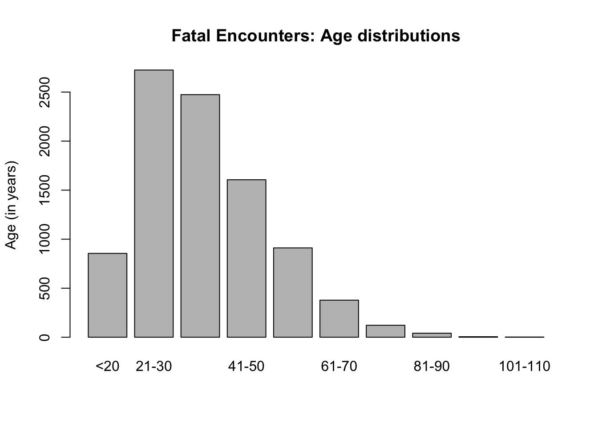
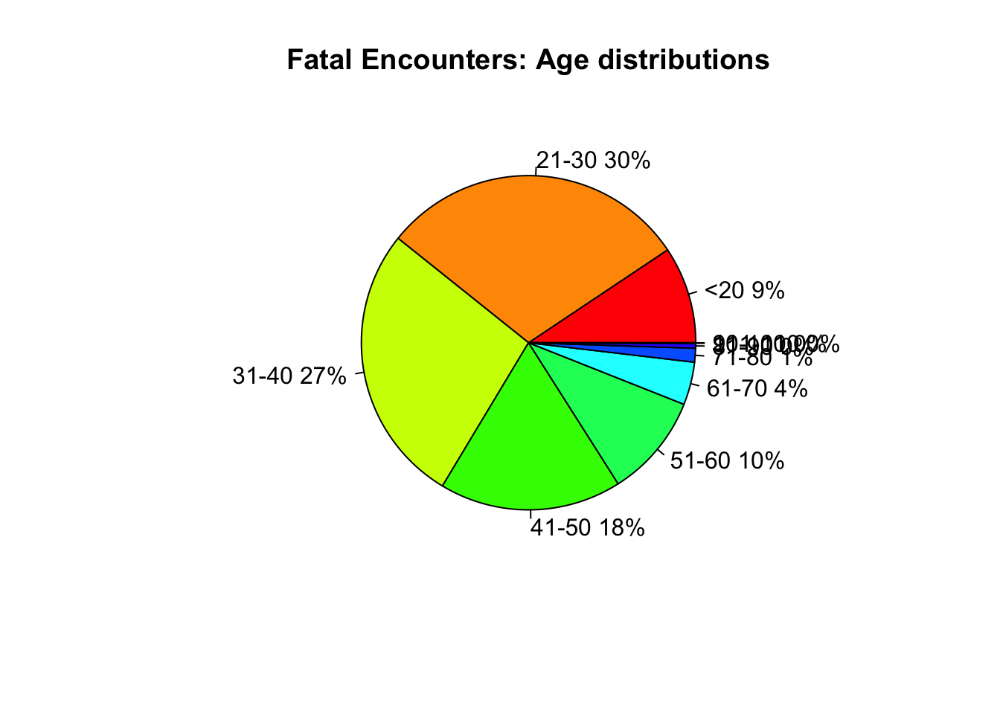
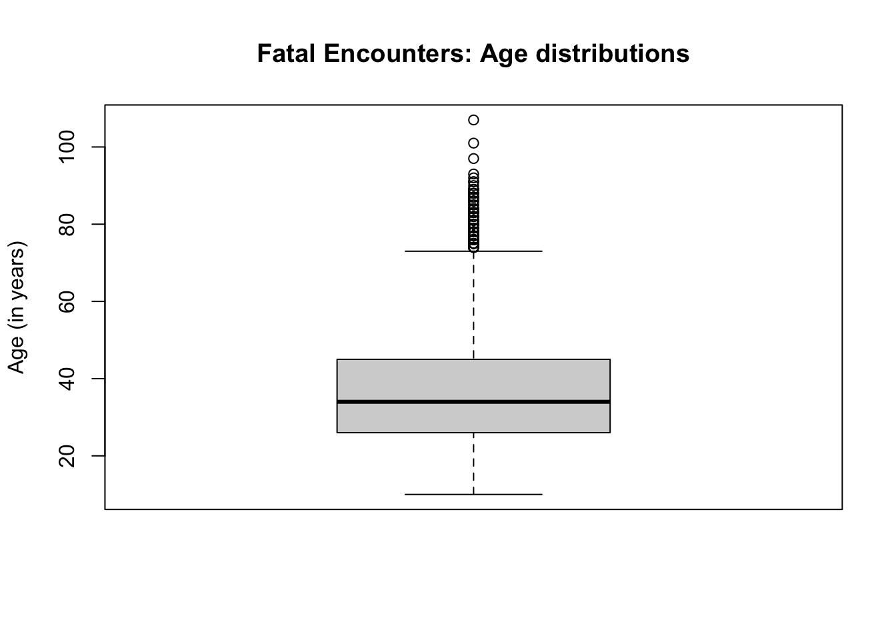
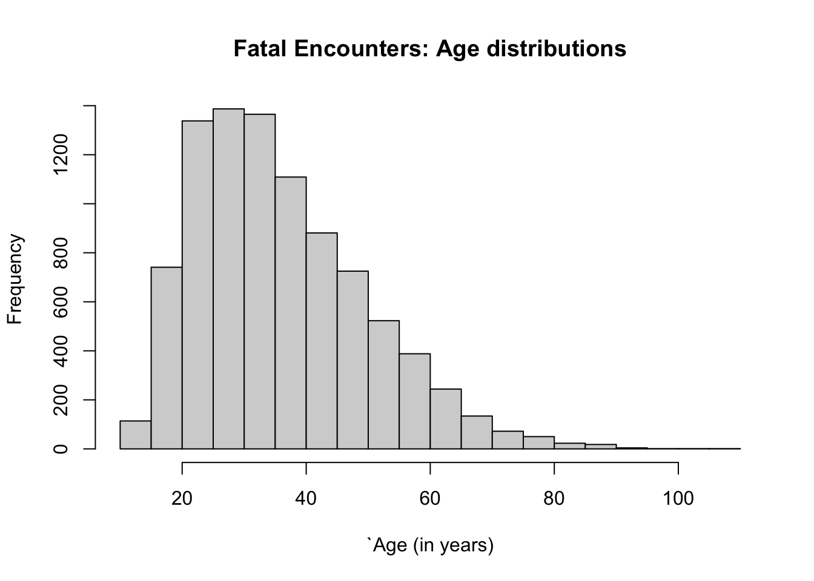
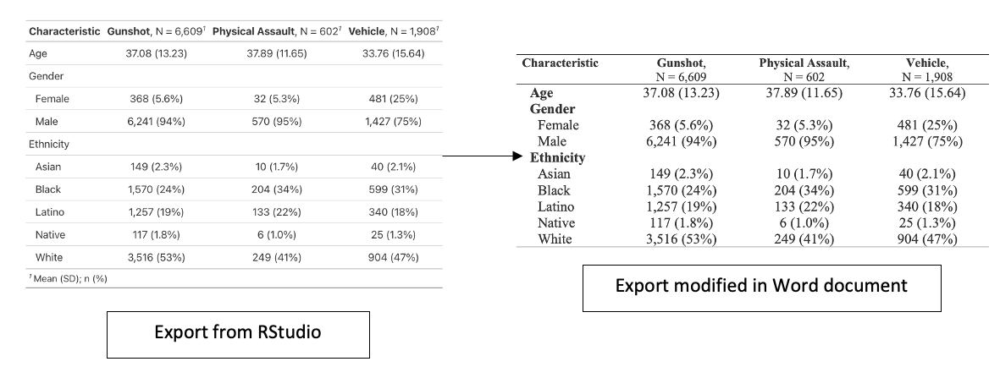

1 Descriptive Statistics
Theme: Fatal encounters with Police (USA)
1.1 Introduction
This week is a simple exercise. We take a look at how descriptive analyses are applied to data with regards to fatal encounters with the police in the United States of America. The use of deadly force or excessive violence by those affiliated with the law enforcement against suspects and civilians is a problematic matter in America’s society. It is a social problem that predominately affects people who are already disadvantaged in life, and are in deprived areas where the social-dynamic and relationship between the police and citizen are fractured.
We can going to use an excerpt data from a brilliant source, Fatal Encounters Database, which is an open source database containing details about deaths through police interaction in the United States. These records have been documented since January 1st, 2000. We will carry out some simple descriptive analysis to examine the burden of such fatal encounters in the USA from 2013 and 2020, inclusively. At the end of this session, you should be able to perform the following:
- Descriptive analysis using frequency distribution tables in RStudio
- Descriptive analysis of continuous variables with central tendency & dispersion measures
- How to create customizable descriptive summary tables in RStudio
- Graphical visualisations using various plots
1.1.1 Downloadable dataset for this exercise
Make sure to download the data set for Week 1 from HERE. The data file is named WK01 - Fatal Encounters with Police.csv Here is the data descriptor:
| Variable Name | Description |
|---|---|
| UniqueID | Unique identification number |
| Name | Name of victim |
| Age | Age of victim (in years) |
| Gender | “Male” or “Female” |
| City | City location of fatal encounter |
| State | State of fatal encounter |
| ZipCode | Zip code |
| County | County of fatal encounter |
| Latitude | Latitude (in decimal degrees) |
| Longitude | Longitude (in decimal degrees) |
| LethalForceType | Type of lethal force used by Police |
| FleeingStatus | Was the suspect or civilian trying to flee? |
| ArmedStatus | Was the suspect or civilian carrying a weapon? |
| AggressionSign | Did the victim aggressive? |
| Ethnicity | Ethnicity |
| DeathYear | Year of death due to police encounter |
1.1.2 Reading list
Please find reading list for this week:
Recommended Book: Dalgaard, P. (2008). Introductory Statistics with R (Second Edition). Chapter 4: Descriptive statistics and graphics. Pages 67 to 93 (Download Ebook here)
Recommended Book: Zuur, A.F., Ieno, E.N. & Meesters, E.H.W.G., (2009). A Beginner’s Guide to R. Chapter 7: Graphing Tools. Pages 127 to 167 (Download Ebook here)
1.2 Frequency distribution
Let us begin by importing our week’s 1 data set into RStudio and calling the data frame FatalEncounters.
# Set your own directory using setwd() function
# Load data into RStudio using read.csv(). The spreadsheet is stored in the object called 'FatalEncounters'
FatalEncounters <- read.csv("WK01 - Fatal Encounters with Police.csv")The simplest operation of a descriptive analysis is a frequency distribution. The frequency table allows the user to display the frequency of various outcomes in a sample. There are 9,119 deaths in this data set - each row in this data set represents a death of a civilian or suspect caused police using lethal force.
One can easily generate a summary frequency tables for the number of fatal encounters based on a nominal or ordinal categorical characteristic using the table() of the fly.
For instance, suppose if you wanted to tabulate the frequency of fatal encounters based on the type of lethal force used by a law enforcer. You can type the following code:
# tabulating number of fatal encounters using a nominal variable
table(FatalEncounters$LethalForceType)##
## Gunshot Physical Assault Vehicle
## 6609 602 1908This shows the absolute number of fatal encounters with the police. You can report the prevalence of death based on the type of deadly force simply by using the prop.table():
# To get the prevalence (or proportions) of fatal encounters based on a nominal variable
# --- tabulate result and pass it into the prop.table() function
result <- table(FatalEncounters$LethalForceType)
prop.table(result)##
## Gunshot Physical Assault Vehicle
## 0.72475052 0.06601601 0.20923347We have the absolute numbers and the proportions separated - we can bring these results together by using the transform() which is much useful:
# To get the prevalence (or proportions) of fatal encounters based on a nominal variable
# --- tabulate result and pass it into the transform() function. The Proportion is an argument with
# --- prop.table(Freq) always
result <- table(FatalEncounters$LethalForceType)
transform(result, Proportions = prop.table(Freq))## Var1 Freq Proportions
## 1 Gunshot 6609 0.72475052
## 2 Physical Assault 602 0.06601601
## 3 Vehicle 1908 0.20923347Interpretation: In the United States, the use of either a gun, a vehicle or physical force by police resulted in the deaths of 6,609 (73%), 1,908 (21%) or 602 (6%) suspects (or civilians) respectively.
1.2.1 Computing frequencies, cumulative frequency and proportions
Suppose we want to compute the frequency distribution of these fatal encounters based on some continuous variable such as age (in years). We can perform this univariable analysis to summarise the number of deaths with the age distribution with fixed ranges to compute frequency, cumulative frequency and proportions.
To do this, we first create bins (or groups) for the age ranges by gauging the the minimum and maximum age value with min() and max() function, and create the bins with the cut() function using some interval.
min(FatalEncounters$Age)## [1] 10max(FatalEncounters$Age)## [1] 107The victim with the lowest age was 10 years, and the oldest was 101 years. Now, we create a new Bins column from 5 (based from lowest value) to 110 (i.e., based on the highest which is 101) at intervals of 10 years to look something like 10-20, 21-30, 31-40, 41-50, 51-60,61-70, 71-80, 81-90, 91-100 and 101-110 by cutting the Age variable using the cut() function. This will help us to create the desired frequency distribution table in RStudio.
# starting from 5 to ensure lowest number 10 is counted in the breaks and vice versa for highest
FatalEncounters$Bins <- cut(FatalEncounters$Age, breaks=c(5, 20, 30, 40, 50, 60, 70, 80, 90, 100, 110), labels = c("<20","21-30","31-40","41-50","51-60","61-70","71-80","81-90","91-100","101-110"))Now, lets create the frequency table that shows the following: (1.) the frequency of deaths based on age ranges; (2.) Cumulative frequency of deaths; and (3.) proportions of deaths falling in those age ranges.
freqtable <- table(FatalEncounters$Bins)
# see frequency of deaths by age Bins (i.e., age group only)
freqtable##
## <20 21-30 31-40 41-50 51-60 61-70 71-80 81-90 91-100 101-110
## 855 2725 2474 1606 911 378 122 41 5 2# now, add the cumulative frequency and proportion to get table output in RStudio
Output <- transform(freqtable, CumuFreq = cumsum(Freq), Proportions=prop.table(Freq))
# see final output
Output## Var1 Freq CumuFreq Proportions
## 1 <20 855 855 0.0937602807
## 2 21-30 2725 3580 0.2988266257
## 3 31-40 2474 6054 0.2713016778
## 4 41-50 1606 7660 0.1761158022
## 5 51-60 911 8571 0.0999013050
## 6 61-70 378 8949 0.0414519136
## 7 71-80 122 9071 0.0133786599
## 8 81-90 41 9112 0.0044961070
## 9 91-100 5 9117 0.0005483057
## 10 101-110 2 9119 0.0002193223Interpretation: Fatal encounters with the police were more pronounced in victims (i.e., suspect or civilian) of the following age bracket: 21-30 years (2,725, 29.8%), 31-40 years (2,474, 27.1%) and 41-50 years (1,606, 17.6%).
1.2.2 Using a barplot() and piechart()
Visually, the above bins or categories for the frequencies by age group can easily be represented using a barplot() or a piechart(). This code demonstrates how to create a barplot in RStudio:
# capture the values from table().
tableAgeGroups <- table(FatalEncounters$Bins)
# feed the tableAgeGroups into barplot() function
barplot(tableAgeGroups,
ylab = "Age (in years)",
main = "Fatal Encounters: Age distributions")
This code also demonstrates how to create a piechart in RStudio:
# Pie Chart with Percentages
# capture the values from table().
tableAgeGroups <- table(FatalEncounters$Bins)
# create vector for labelling pie chart
labels <- c("<20","21-30","31-40","41-50","51-60","61-70","71-80","81-90","91-100","101-110")
# calculate percentage
pct <- round(tableAgeGroups/sum(tableAgeGroups)*100)
lbls <- paste(labels, pct) # add percents to labels
lbls <- paste(lbls,"%",sep="") # ad % to labels
pie(tableAgeGroups,labels = lbls, col=rainbow(length(lbls)),
main="Fatal Encounters: Age distributions")
1.3 Descriptive analysis using measures for central tendency & dispersion
1.3.1 Summary estimates using summary()
The central tendency refers to the tendency for the values of a continuous variable to be clustered round its mean or median. The arithmetic mean is a useful measure to describe this central tendency especially in the case when data is normally distributed. While the median is best for describing data when its skewed.
Dispersion on the other hand refers to the extent of how the distribution of the data either stretched or squeezed. The term is also interchangeable with words variability, scatter, or spread.
Computing these measures in RStudio are incredibly easy. Here’s a list of functions and what they do:
mean(): this calculates the average value (central measure)median(): this calculates the middle-most value (or data point at the 50th percentile) (central measure)min(): this finds the lowest value in the distribution (dispersion/range value)max(): this finds the highest value in the distribution (dispersion/range value)IQR(): this calculates the interquartile range by taking the difference using 25th- from 75th percentile values (dispersion/range)var(): this calculates the variance - square root the value to get standard deviation (variability measure)sd(): this calculates the standard deviation (variability measure)
You can use the above functions especially if you need to tease out a particular value if you are writing a recursive function. But you can easily compute these summary statistics simply by using the summary() code. Let’s obtain the central tendency and range values for the only continuous variable in the data set which is the Age column.
# compute summary() function to get central and range values
summary(FatalEncounters$Age)## Min. 1st Qu. Median Mean 3rd Qu. Max.
## 10.00 26.00 34.00 36.44 45.00 107.00# compute the standard deviation sd()
sd(FatalEncounters$Age)## [1] 13.7431Interpretation: The overall average age of someone being killed due to a fatal encounter with the police in America is 36.44 [sd of ±13.74, range: 10 (minimum) to 107 (maximum)] years, with IQRs between 26-45 years of age.
1.3.2 Using a boxplot() and hist()
Visually, the above summary estimates can easily be represented using a box plot. You can use this boxplot() to create the desired output:
# creates a boxplot(). This reproduces the estimates from summary() but graphically
boxplot(FatalEncounters$Age,
ylab = "Age (in years)",
main = "Fatal Encounters: Age distributions")
# creates a hist() this shows the shape of the age distribution
hist(FatalEncounters$Age,
ylab = "Frequency", xlab = "`Age (in years)",
main = "Fatal Encounters: Age distributions")
1.4 Generating tables shells in RStudio
There are a lot of categorical variables in this data set e.g., Gender, LethalForceType, ArmedStatus, FleeingStatus, AggressionSign and Ethnicity. You can generate custom made tables in RStudio saving you a whole bunch of time creating them in Word document. You can create them in R and export the result to word to make further modifications. You can install the package gtsummary and dplyr
gtsummary: provides functions for making tables from RStudio and pasted into a documentdplyr: provides access to further data management functions
# install.package()
install.packages("gtsummary")
install.packages("dplyr")
# activate package
library("gtsummary")
library("dplyr")Installing the gtsummary package gives us access to the tbl_summary() function which is a brilliant function to performing descriptive analyses and churning the results out in to a table from RStudio. The coding is quite involved though because it uses a bit of tidyverse syntax.
Let’s create a table report only numbers by categories to get the basic ideas of the coding style:
# step 1: list of the variables you want to be generated in the table in the select() function for the original data.frame
# step 2: pipe (%>%) into a new object called tableOutput
# step 3: view tableOutput with tbl_summary() function
tableOutput <- FatalEncounters %>% select(Age, AggressionSign, ArmedStatus, Gender, Ethnicity, FleeingStatus, LethalForceType)
tableOutput %>% tbl_summary()The result will appear in the Viewer window. For further exploration, we can perform a descriptive analysis for the demographic characteristics of the victims with their Gender, Age and Ethnicity broken down by type of lethal force used (i.e., LethalForceType) as an outcome. The outcome variable will be used as the split variable in the by= argument.
# example --- update tableOutput to lethalforcetype, gender, age, skin colour & include by='LethalForceType'
tableOutput <- FatalEncounters %>% select(Age, Gender, Ethnicity, LethalForceType)
tableOutput %>% tbl_summary(by=LethalForceType)You can copy the table generated in RStudio’s viewer directly and paste it into a Word document, and make the further modifications.

1.5 Questions
- What do you think about the results displayed in the frequency table?
- What conclusion do you draw from this table?
Critical thinking: Discuss among yourselves whether the information provided in the final table is sufficient to make the conclusions in Question 2.